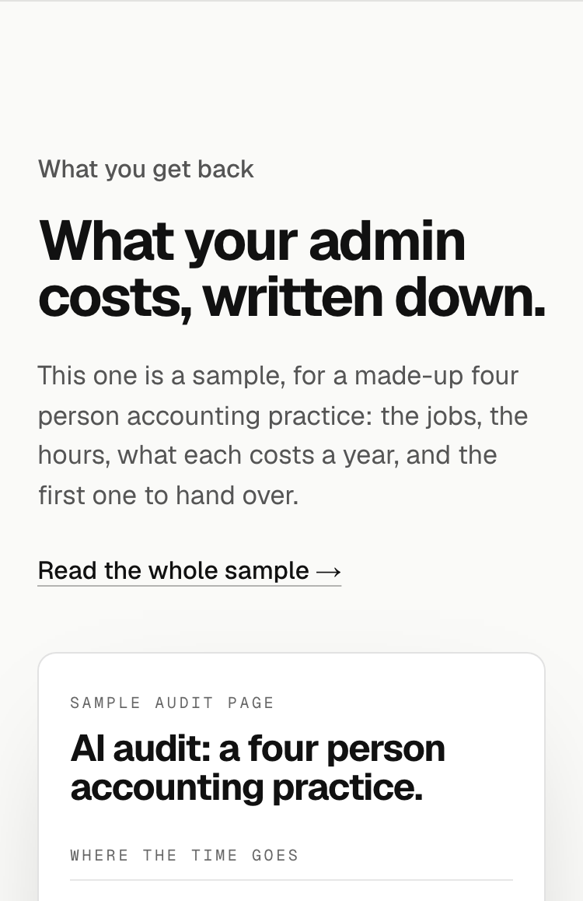
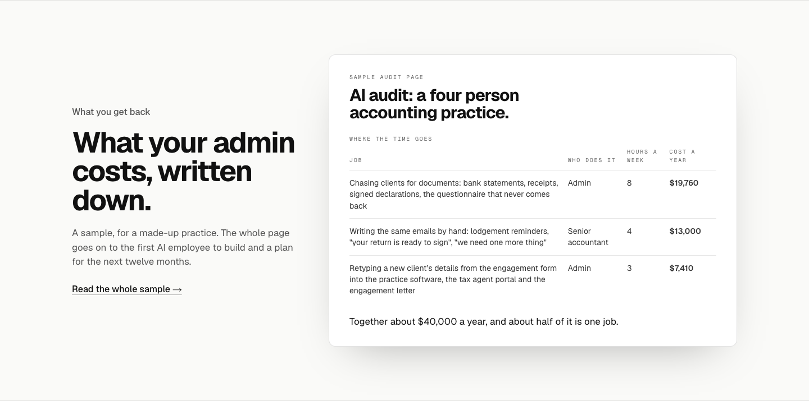
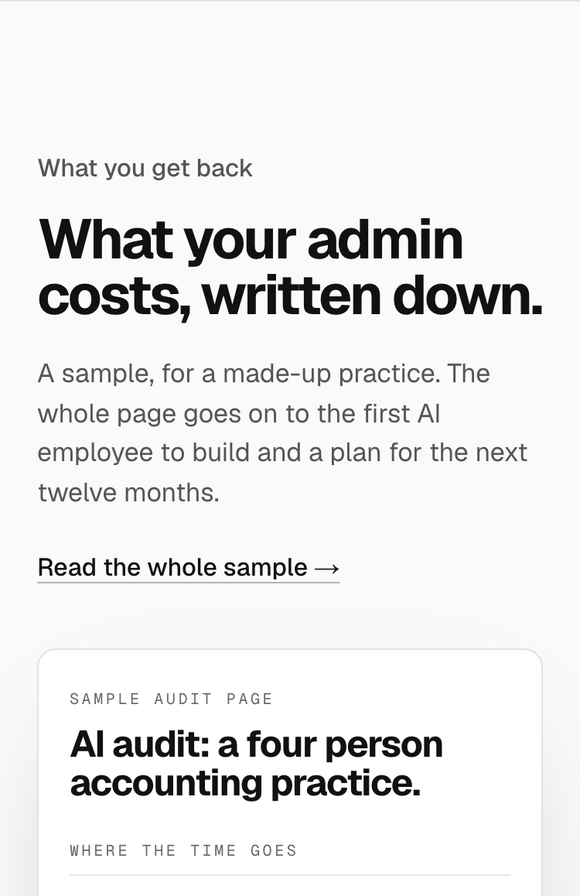
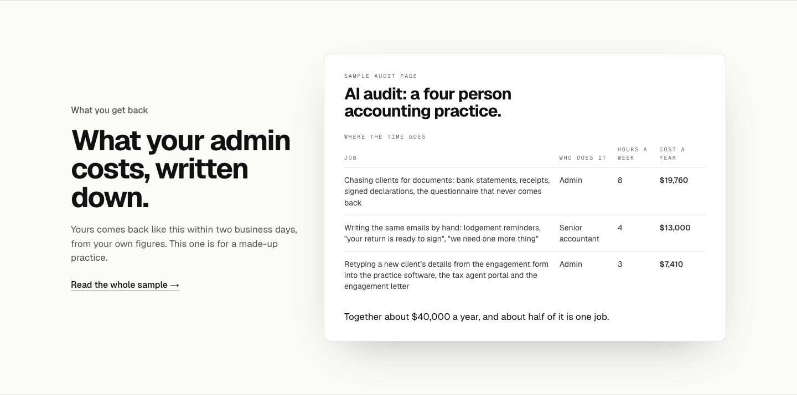
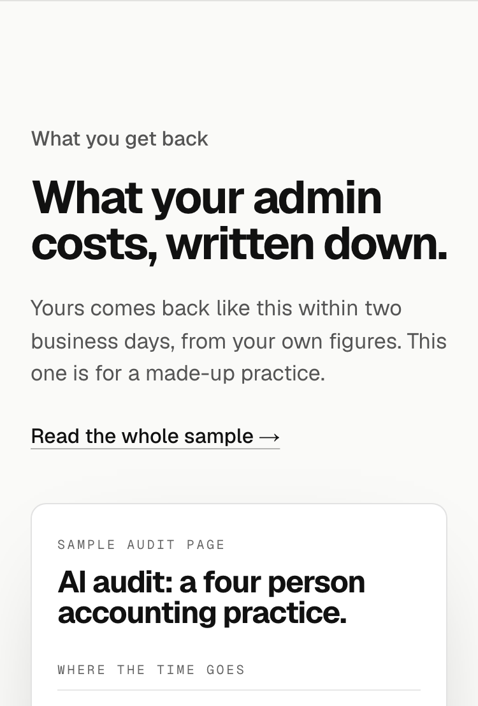
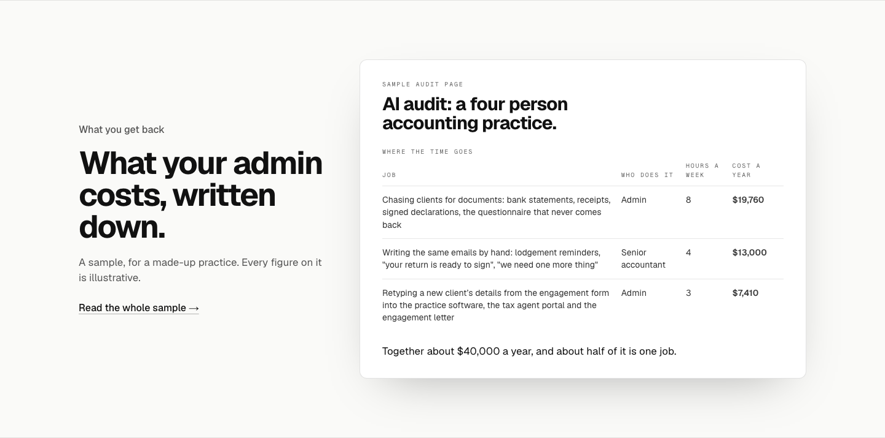
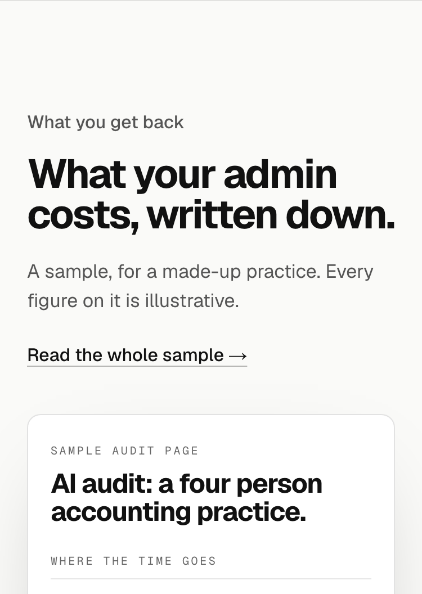

TodayNames the practice again and lists what the sheet beside it already shows.


Today’s line names the practice again and lists the jobs, hours and costs the sheet beside it already shows. At 1440 (left) and 375 (right).

A sample, for a made-up practice. The whole page goes on to the first AI employee to build and a plan for the next twelve months.


Yours comes back like this within two business days, from your own figures. This one is for a made-up practice.


A sample, for a made-up practice. Every figure on it is illustrative.

